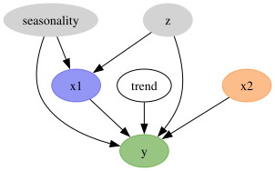
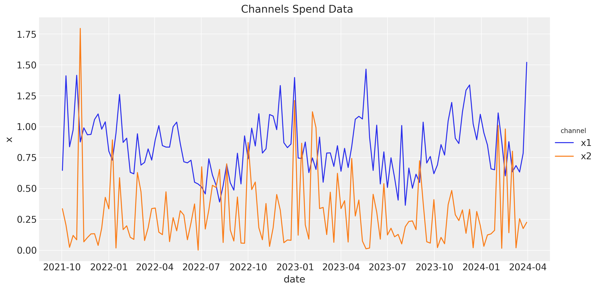
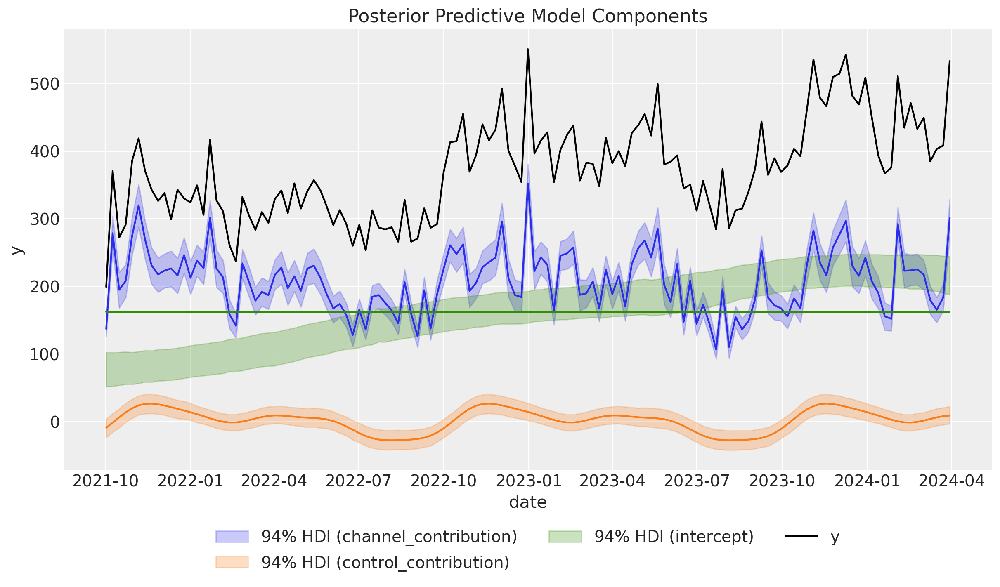
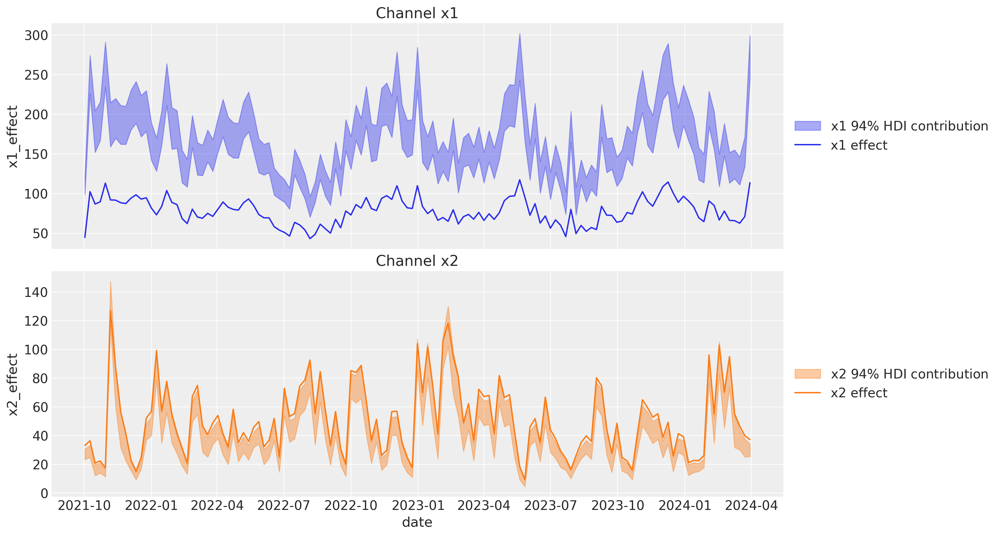
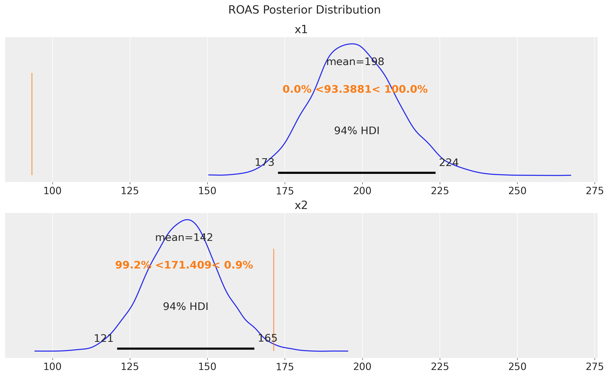
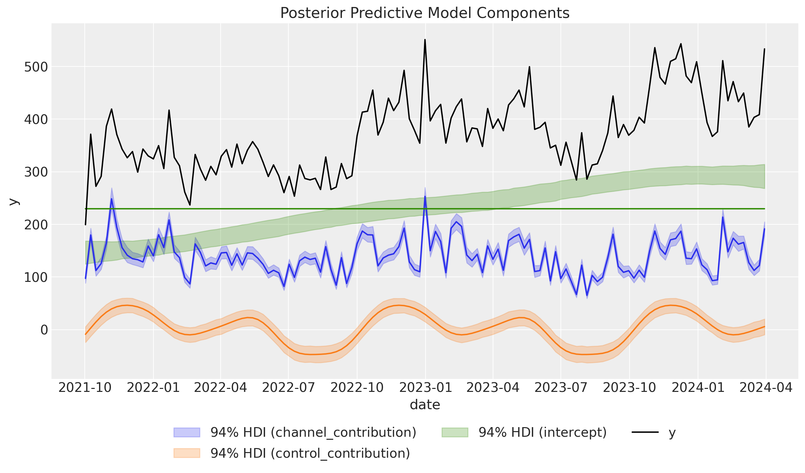
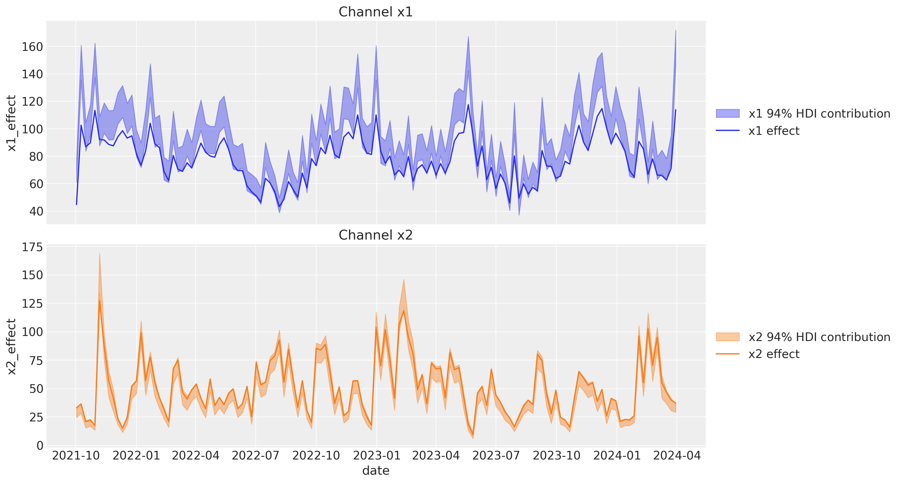
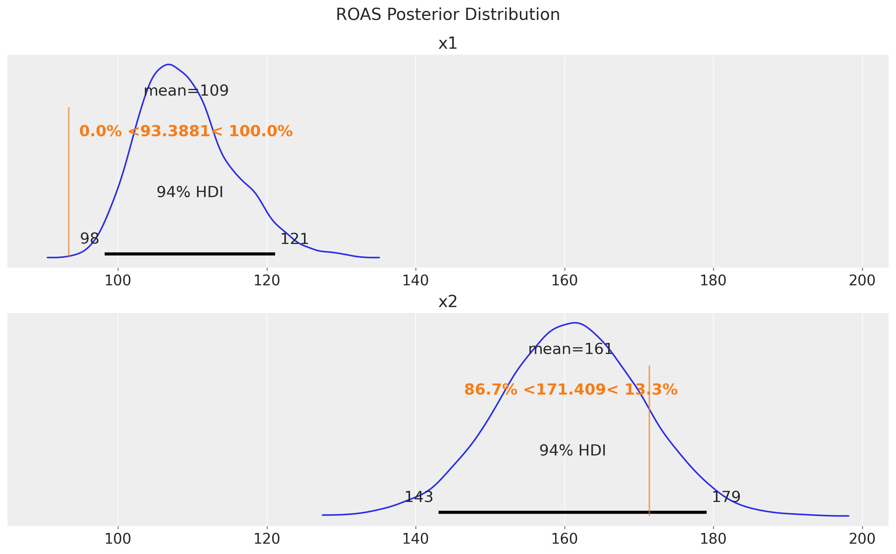

When working with Media Mix Models (MMMs), calibration with lift tests is not just a technical step —it's essential for making these models reliable and actionable. Lift tests serve as a reality check, grounding the model's predictions in real-world outcomes. This process is particularly important because MMMs often rely on data that is both noisy and limited in scope, making accurate predictions difficult.
The true power of MMMs lies in their ability to guide decisions based on potential changes in marketing strategy. For instance, a marketer might ask, "What impact would reducing the budget for channel X by 50% have on overall sales?" To answer such questions, MMMs must be developed as causal models—models that can predict the effects of specific interventions.
Creating a causal model involves constructing a well-defined directed acyclic graph (DAG). A DAG is a visual representation of the relationships between different variables in the model, helping to ensure that the right covariates (or control variables) are included. This isn't just about throwing in every available piece of data; it's about selecting variables that genuinely contribute to understanding the causal relationships in your marketing activities.
Even with a well-constructed DAG, unobserved confounders can pose a significant problem. These are variables that influence both the treatment (e.g., spending on a particular marketing channel) and the outcome (e.g., sales) but are not included in the model. Their omission can lead to biased estimates, which in turn can result in poor decision-making. Unfortunately, unobserved confounders are almost inevitable in any real-world scenario.
In theory, methods like instrumental variables can help address the issue of unobserved confounders. An instrumental variable is a variable that is correlated with the treatment but not with the outcome, except through the treatment. However, finding good instruments is notoriously difficult, making this solution less practical.
An alternative, more practical solution is to calibrate the MMM using lift tests. Lift tests are experiments that measure the incremental effect of a marketing intervention, such as a temporary increase in ad spend on a specific channel. By calibrating the model with the results of these tests, we can reduce the bias introduced by unobserved confounders. Bayesian methods are particularly well-suited for this approach because they allow us to incorporate prior knowledge—information we have before analyzing the data—into the model. This can significantly improve the model's accuracy, even before we start crunching the numbers.
A recent paper, Media Mix Model Calibration With Bayesian Priors by Zhang et al. (2024), proposes a novel approach to calibrating MMMs. Instead of using the traditional beta (or regression) coefficients for each channel, the authors suggest parametrizing the model in terms of return on ad spend (ROAS).
The concept is straightforward: express the beta coefficients in terms of ROAS, and then substitute these into a standard MMM equation. This method simplifies the calibration process and can partially mitigate biases coming from unobserved confounders and noise in the data.
In the blog post Media Mix Model and Experimental Calibration: A Simulation Study, Juan Orduz provides a comprehensive implementation of this method using PyMC. This work demonstrates how this calibration approach can yield more accurate estimates, even when dealing with unobserved confounders. However, despite its strengths, this method has a limitation: it doesn't automatically improve when additional lift tests are added. The authors of the paper suggest aggregating the results of multiple lift tests by taking a weighted average of the ROAS estimates from each experiment.
While the method proposed by Zhang et al. is effective, it could be more efficient in leveraging the results of lift tests. Running these experiments requires significant planning and resources, so it's important to maximize their value.
To address this, we propose an alternative approach. Instead of directly reparametrizing the model in terms of ROAS, we suggest adding additional likelihood functions based on the saturation curves of the marketing channels. Saturation curves describe how the effectiveness of a marketing channel diminishes as spending increases. By calibrating the model through these curves using lift test results, we can continuously refine our estimates as more experiments are conducted. This approach allows us to make better use of the data from lift tests, leading to more accurate and reliable MMMs over time.
In our notebook, we replicate the results from the blog post Media Mix Model and Experimental Calibration: A Simulation Study using the PyMC-Marketing framework. This framework allows us to incorporate lift tests through custom likelihood functions, providing a more nuanced calibration of the MMM. By continuously refining our estimates as new data becomes available, this approach offers a dynamic and robust solution to the challenges posed by unobserved confounders in marketing mix modeling.
For those interested in diving deeper, we encourage you to explore a detailed description of the method in our notebook {ref}mmm_lift_test, where we walk through the process step by step.
import arviz as az import graphviz as gr import matplotlib.pyplot as plt import numpy as np import pandas as pd import seaborn as sns from pymc_marketing.hsgp_kwargs import HSGPKwargs from pymc_marketing.mmm.delayed_saturated_mmm import ( MMM, GeometricAdstock, LogisticSaturation, ) from pymc_marketing.paths import data_dir from pymc_marketing.prior import Prior az.style.use("arviz-darkgrid") plt.rcParams["figure.figsize"] = [12, 7] plt.rcParams["figure.dpi"] = 100 plt.rcParams["figure.facecolor"] = "white" seed: int = sum(map(ord, "roas")) rng: np.random.Generator = np.random.default_rng(seed=seed)
We read the data, which is available in the data of our repository.
data_path = "https://raw.githubusercontent.com/pymc-labs/pymc-marketing/main/data/mmm_roas_data.csv" raw_df = pd.read_csv(data_path, parse_dates=["date"]) raw_df.info()
<class 'pandas.core.frame.DataFrame'>
RangeIndex: 131 entries, 0 to 130
Data columns (total 20 columns):
# Column Non-Null Count Dtype
--- ------ -------------- -----
0 date 131 non-null datetime64[ns]
1 dayofyear 131 non-null int64
2 quarter 131 non-null object
3 trend 131 non-null float64
4 cs 131 non-null float64
5 cc 131 non-null float64
6 seasonality 131 non-null float64
7 z 131 non-null float64
8 x1 131 non-null float64
9 x2 131 non-null float64
10 epsilon 131 non-null float64
11 x1_adstock 131 non-null float64
12 x2_adstock 131 non-null float64
13 x1_adstock_saturated 131 non-null float64
14 x2_adstock_saturated 131 non-null float64
15 x1_effect 131 non-null float64
16 x2_effect 131 non-null float64
17 y 131 non-null float64
18 y01 131 non-null float64
19 y02 131 non-null float64
dtypes: datetime64[ns](1), float64(17), int64(1), object(1)
memory usage: 20.6+ KB
There are many columns in the dataset. We will explain the below. For now, that is important is for modeling purposes we will only use the date, x1, x2 (channels)and y (target) columns.
model_df = raw_df.copy().filter(["date", "x1", "x2", "y"])
In the original blog post, the authors generate the data using the following DAG.
g = gr.Digraph() g.node(name="seasonality", label="seasonality", color="lightgray", style="filled") g.node(name="trend", label="trend") g.node(name="z", label="z", color="lightgray", style="filled") g.node(name="x1", label="x1", color="#2a2eec80", style="filled") g.node(name="x2", label="x2", color="#fa7c1780", style="filled") g.node(name="y", label="y", color="#328c0680", style="filled") g.edge(tail_name="seasonality", head_name="x1") g.edge(tail_name="z", head_name="x1") g.edge(tail_name="x1", head_name="y") g.edge(tail_name="seasonality", head_name="y") g.edge(tail_name="trend", head_name="y") g.edge(tail_name="z", head_name="y") g.edge(tail_name="x2", head_name="y") g

We are interested in the effect of the x1 and x2 channels on the y variable. We have additional covariates like yearly seasonality and a a non-linear trend component. In addition, there is an unobserved confounder z that affects both the channels and the target variable. This variable introduces a bias in the estimates if we do not account for it. However, for this problem we are going to assume that we do not have access to the z variable (hence, unobserved).
In the raw_df we have all all the columns needed in the data generating process to obtain the target variable y. For example, the x1_adstock_saturated column is the result of applying the adstock function and then the saturation to the x1 channel.
The target variable y is generated as
y = amplitude * (trend + seasonality + z + x1_effect + x2_effect + epsilon)
where epsilon is a Gaussian noise and amplitude is a set to $100$.
The variables y01 and y02 are the target variable y without the effect of the x1 and x2 channels, respectively. Hence
y01 = {amplitude} * (trend + seasonality + z + x2_effect + epsilon)
y02 = {amplitude} * (trend + seasonality + z + x1_effect + epsilon)
For details on the data generating process, please refer to the blog post.
From the variables y01 and y02 we can compute the true ROAS for the x1 and x2 channels for the whole period ( for simplicity we ignore the carryover effect).
true_roas_x1 = (raw_df["y"] - raw_df["y01"]).sum() / raw_df["x1"].sum() true_roas_x2 = (raw_df["y"] - raw_df["y02"]).sum() / raw_df["x2"].sum() print(f"True ROAS for x1: {true_roas_x1:.2f}") print(f"True ROAS for x2: {true_roas_x2:.2f}")
True ROAS for x1: 93.39
True ROAS for x2: 171.41
We would like to recover the true ROAS for the x1 and x2 channels using a media mix model.
Before jumping into the model, let's plot channels the data to understand it better.
g = model_df.melt( id_vars=["date"], value_vars=["x1", "x2"], var_name="channel", value_name="x" ).pipe( (sns.relplot, "data"), kind="line", x="date", y="x", hue="channel", height=6, aspect=2, ) g.fig.suptitle("Channels Spend Data", fontsize=16, y=1.02);

To begin with, we fit a media mix model, without including the unobserved confounder z, using a saturated adstock and logistic saturation using PyMC-Marketing's API. For more details on the model, please refer to the {ref}mmm_example notebook. As we discuss in that notebook, without any lift test information, a good starting point is to pass the cost share into the prior of the beta channel coefficients.
cost_share = model_df[["x1", "x2"]].sum() / model_df[["x1", "x2"]].sum().sum()
We can specify the model configuration as follows (see the {ref}model_configuration notebook for more details):
model_config = { "intercept": Prior("Normal", mu=200, sigma=20), "likelihood": Prior("Normal", sigma=Prior("HalfNormal", sigma=2)), "gamma_fourier": Prior("Normal", mu=0, sigma=2, dims="fourier_mode"), "intercept_tvp_config": HSGPKwargs( m=100, L=None, eta_lam=1.0, ls_mu=5.0, ls_sigma=10.0, cov_func=None ), "adstock_alpha": Prior("Beta", alpha=2, beta=3, dims="channel"), "saturation_lam": Prior("Gamma", alpha=2, beta=2, dims="channel"), "saturation_beta": Prior("HalfNormal", sigma=cost_share.to_numpy(), dims="channel"), }
Observe that we are going to use a Gaussian process to model the non-linear trend component (see {ref}mmm_tv_intercept).
Let's fit the model!
mmm = MMM( adstock=GeometricAdstock(l_max=4), saturation=LogisticSaturation(), date_column="date", channel_columns=["x1", "x2"], time_varying_intercept=True, time_varying_media=False, yearly_seasonality=5, model_config=model_config, ) y = model_df["y"] X = model_df.drop(columns=["y"]) fit_kwargs = { "tune": 1_000, "chains": 4, "draws": 2_000, "nuts_sampler": "numpyro", "target_accept": 0.9, "random_seed": rng, } _ = mmm.fit(X, y, **fit_kwargs) _ = mmm.sample_posterior_predictive( X, extend_idata=True, combined=True, random_seed=rng )
Let's verify that we do not have divergent transitions.
# Number of diverging samples mmm.idata["sample_stats"]["diverging"].sum().item()
0
Next, we look into the model components contributions:
mmm.plot_components_contributions(original_scale=True);

The results look very similar to the results from the original blog post. In particular, note that we were able to capture the non-linear trend.
Next, we look into the channel contributions against the true effects (which we know from the data generating process).
channels_contribution_original_scale = mmm.compute_channel_contribution_original_scale() channels_contribution_original_scale_hdi = az.hdi( ary=channels_contribution_original_scale ) fig, ax = plt.subplots( nrows=2, figsize=(15, 8), ncols=1, sharex=True, sharey=False, layout="constrained" ) amplitude = 100 for i, x in enumerate(["x1", "x2"]): # HDI estimated contribution in the original scale ax[i].fill_between( x=model_df["date"], y1=channels_contribution_original_scale_hdi.sel(channel=x)["x"][:, 0], y2=channels_contribution_original_scale_hdi.sel(channel=x)["x"][:, 1], color=f"C{i}", label=rf"{x} $94\%$ HDI contribution", alpha=0.4, ) sns.lineplot( x="date", y=f"{x}_effect", data=raw_df.assign(**{f"{x}_effect": lambda df: amplitude * df[f"{x}_effect"]}), # noqa B023 color=f"C{i}", label=f"{x} effect", ax=ax[i], ) ax[i].legend(loc="center left", bbox_to_anchor=(1, 0.5)) ax[i].set(title=f"Channel {x}")

We see that the contribution for x1 is very different from the true effect. This is because the absence of the unobserved confounder z. For x2, the contribution is very similar to the true effect.
Finally, we can compute the ROAS for the x1 and x2 channels (again, ignoring the small carryover effect).
roas_posterior = ( channels_contribution_original_scale.sum(dim="date") / model_df[["x1", "x2"]].sum().to_numpy()[np.newaxis, np.newaxis, :] ) fig, ax = plt.subplots( nrows=2, ncols=1, figsize=(12, 7), sharex=True, sharey=False, layout="constrained" ) az.plot_posterior(roas_posterior, ref_val=[true_roas_x1, true_roas_x2], ax=ax) ax[0].set_title("x1") ax[1].set_title("x2") fig.suptitle("ROAS Posterior Distribution", fontsize=16, y=1.05);

We see that the ROAS for x1 is very different from the true value. This is reflecting the bias induced by the unobserved confounder z. The models suggests that x1 is more effective than x2, but we know from the data generating process that x2 is more effective!
Now we fit a model with some lift tests. We will use the same model configuration as before, but we free the priors of the beta channel coefficients as these are included in the saturation function parametrization. In general, we expect lift tests priors or associated custom likelihoods to be better than the cost share prior.
model_config = { "intercept": Prior("Normal", mu=200, sigma=20), "likelihood": Prior("Normal", sigma=Prior("HalfNormal", sigma=2)), "gamma_fourier": Prior("Normal", mu=0, sigma=2, dims="fourier_mode"), "intercept_tvp_config": HSGPKwargs( m=50, L=None, eta_lam=1.0, ls_mu=5.0, ls_sigma=10.0, cov_func=None ), "adstock_alpha": Prior("Beta", alpha=2, beta=3, dims="channel"), "saturation_lam": Prior("Gamma", alpha=2, beta=2, dims="channel"), "saturation_beta": Prior("HalfNormal", sigma=1.5, dims="channel"), } mmm_lift = MMM( adstock=GeometricAdstock(l_max=4), saturation=LogisticSaturation(), date_column="date", channel_columns=["x1", "x2"], time_varying_intercept=True, time_varying_media=False, yearly_seasonality=5, model_config=model_config, ) # we need to build the model before adding the lift test measurements mmm_lift.build_model(X, y)
In a lift study, one temporarily changes the budget of a channel for a fixed period of time, and then uses some method (for example CausalPy) to make inference about the change in sales directly caused by the adjustment.
Recall: A lift test is characterized by:
channel: the channel that was testedx: pre-test channel spenddelta_x: change made to xdelta_y: inferred change in sales due to delta_xsigma: standard deviation of delta_yAn experiment characterized in this way can be viewed as two points on the saturation curve for the channel.
Next, assume we have run two lift tests for the x1 and x2 channels. The results table looks like this:
df_lift_test = pd.DataFrame( data={ "channel": ["x1", "x2", "x1", "x2"], "x": [0.25, 0.1, 0.8, 0.25], "delta_x": [0.25, 0.1, 0.8, 0.25], "delta_y": [ true_roas_x1 * 0.25, true_roas_x2 * 0.1, true_roas_x1 * 0.8, true_roas_x2 * 0.25, ], "sigma": [3, 3, 3, 3], } ) df_lift_test
| channel | x | delta_x | delta_y | sigma | |
|---|---|---|---|---|---|
| 0 | x1 | 0.25 | 0.25 | 23.347033 | 3 |
| 1 | x2 | 0.10 | 0.10 | 17.140880 | 3 |
| 2 | x1 | 0.80 | 0.80 | 74.710505 | 3 |
| 3 | x2 | 0.25 | 0.25 | 42.852201 | 3 |
Remark: Note that we have added the true ROAS for the x1 and x2 channels implicit to the df_lift_test table. We add them by multiplying the delta_y as this is what we would have observed if we had run the lift test (or similar values). In the simulation Media Mix Model and Experimental Calibration: A Simulation Study, the author included these "true" values into the prior for the ROAS.
Now, we fit the model with the lift test measurements.
mmm_lift.add_lift_test_measurements(df_lift_test=df_lift_test)
_ = mmm_lift.fit(X, y, **fit_kwargs) _ = mmm_lift.sample_posterior_predictive( X, extend_idata=True, combined=True, random_seed=rng )
Again, we verify that we do not have divergent transitions.
# Number of diverging samples mmm_lift.idata["sample_stats"]["diverging"].sum().item()
0
Let's plot the components' contributions as we did before.
mmm_lift.plot_components_contributions(original_scale=True);

As before, we have recovered the non-linear trend component and the yearly seasonality.
Now, let's compute the channel contributions to the true ones.
channels_contribution_original_scale = ( mmm_lift.compute_channel_contribution_original_scale() ) channels_contribution_original_scale_hdi = az.hdi( ary=channels_contribution_original_scale ) fig, ax = plt.subplots( nrows=2, figsize=(15, 8), ncols=1, sharex=True, sharey=False, layout="constrained" ) amplitude = 100 for i, x in enumerate(["x1", "x2"]): # HDI estimated contribution in the original scale ax[i].fill_between( x=model_df["date"], y1=channels_contribution_original_scale_hdi.sel(channel=x)["x"][:, 0], y2=channels_contribution_original_scale_hdi.sel(channel=x)["x"][:, 1], color=f"C{i}", label=rf"{x} $94\%$ HDI contribution", alpha=0.4, ) sns.lineplot( x="date", y=f"{x}_effect", data=raw_df.assign(**{f"{x}_effect": lambda df: amplitude * df[f"{x}_effect"]}), # noqa B023 color=f"C{i}", label=f"{x} effect", ax=ax[i], ) ax[i].legend(loc="center left", bbox_to_anchor=(1, 0.5)) ax[i].set(title=f"Channel {x}")

The contributions look much better and they are very close to the ones of the original blog post! Hence, these two approaches are very similar. However note that the PyMC-Marketing approach is more flexible as it allows to enrich the estimates with more test and different media spends to have a better understanding of the saturation effect.
Finally, let's compute the ROAS for the x1 and x2 channels.
roas_posterior = ( channels_contribution_original_scale.sum(dim="date") / model_df[["x1", "x2"]].sum().to_numpy()[np.newaxis, np.newaxis, :] ) fig, ax = plt.subplots( nrows=2, ncols=1, figsize=(12, 7), sharex=True, sharey=False, layout="constrained" ) az.plot_posterior(roas_posterior, ref_val=[true_roas_x1, true_roas_x2], ax=ax) ax[0].set_title("x1") ax[1].set_title("x2") fig.suptitle("ROAS Posterior Distribution", fontsize=16, y=1.05);

The estimates are very very close to the true ROAS! We do get from the model that x2 is more effective than x1, which is aligned with the lift test results!
In this notebook, we have seen a concrete example of how media mix models can provide bias estimates when we have unobserved confounders in the model specification. Ideally, we'd add the confounder, but in the absence of that, we need to provide a reality anchor to the model to have meaningful estimates. We have shown that the PyMC-Marketing approach of adding lift test measurements to the model is very similar to the one proposed in the paper Media Mix Model Calibration With Bayesian Priors and the blog post Media Mix Model and Experimental Calibration: A Simulation Study. However, the PyMC-Marketing approach is more flexible as it allows enriching the estimates with more lift tests and different media spending to better understand the saturation effect. We have also seen why it is essential to include the lift test measurements in the model to account for the unobserved confounders and better understand the saturation effect.
If you are interested in seeing what we at PyMC Labs can do for you, then please email info@pymc-labs.com. We work with companies at a variety of scales and with varying levels of existing modeling capacity. We also run corporate workshop training events and can provide sessions ranging from introduction to Bayes to more advanced topics.